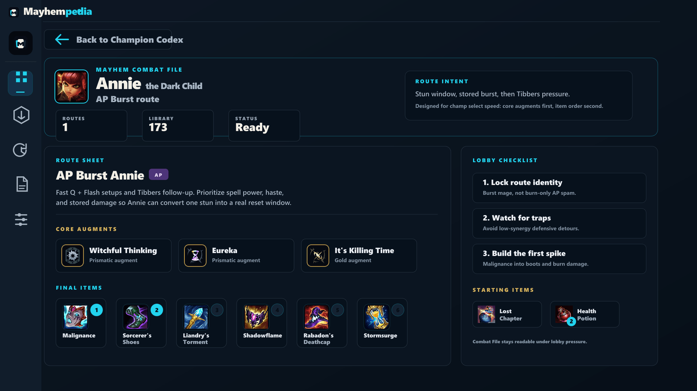

Open your champion
Routes are organized around an actual game plan, not an unfiltered item pile.
Mayhempedia turns one champion into a clear plan: core augments, a build order, and the reason the route works.

Mayhempedia is not trying to replace every stats site. It answers the smaller, more urgent question: “I rolled this champion. What am I actually trying to build?”
Routes are organized around an actual game plan, not an unfiltered item pile.
See the augments that unlock the route and the fallback options that keep it playable.
Review a strong game and capture the loadout as your own route for next time.
The point of the first test is not polished marketing. It is finding the route labels, item orders, and lobby moments where the app needs to be more exact.
Reads local League Client state. No Riot password, no game memory access, no gameplay automation.
Read privacy & play safetyFound an incorrect route, a missing augment, or a rough edge? The beta feedback path is part of the product.
Send beta feedbackMayhempedia runs beside the League Client and opens from your desktop or Start menu like any other Windows app.
Download 0.1.1 for WindowsEarly test build. Privacy & play safety release notes